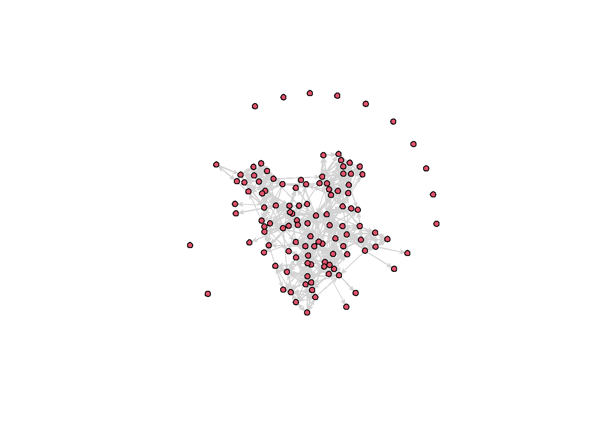
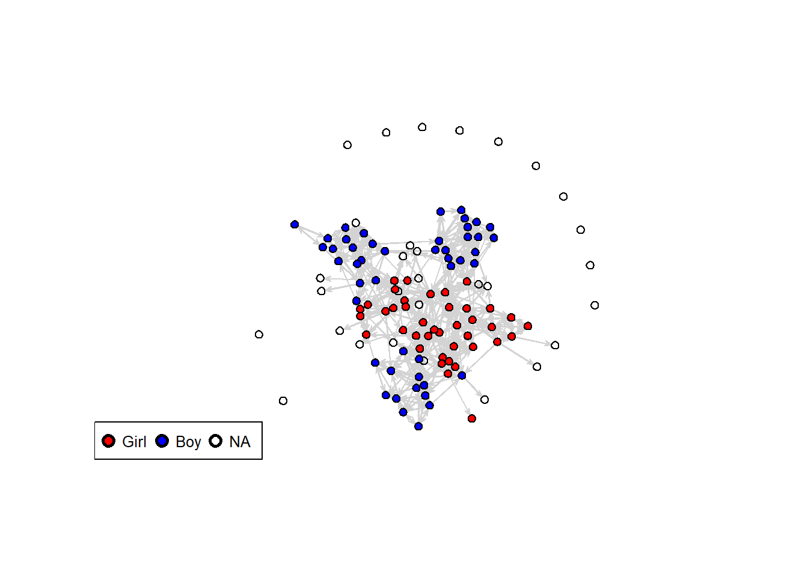

# Empty working environment
rm(list = ls())packages <- c("sna","tidyverse","haven") # define which packages to use
lapply(packages, require, character.only = TRUE) # check if installed## [[1]]
## [1] TRUE
##
## [[2]]
## [1] TRUE
##
## [[3]]
## [1] TRUE# if installed: load
# if not installed: install & load
rm(packages) # remove the object 'packages' from the working environment
# alternative: use remove()# Load the RData object
load("./data/fis-cuf.RData") # Two data objects: composition & survey
View(composition)# Identification numbers for class, student, wave
View(survey) # Nominations for best friend, gender, native, GPA
class(composition) # Type of object: tbl_df, tbl, dataframe## [1] "tbl_df" "tbl" "data.frame"class(survey) # Type of object: bl_df, tbl, dataframe## [1] "tbl_df" "tbl" "data.frame"#glimpse(composition) # Inspect variables, class = dbl
#glimpse(survey) # Inspect variables, class = dbl
#Q: Where are the rest of the variables, e.g. discuss emotional problems?# Adapted the FIS tutorial 'Example_6_1' (for creating a network plot)
# FIS appraoch to loading the data:
#path_in <- "PATH_TO_DATA"
#fis.orig <- read_dta(paste(path_in,"/fis_long.dta",sep=""))
#fis.comp <- read_dta(paste(path_in,"/fis_composition.dta",sep=""))
# Q: What's different compared to load()?
# Specify the network Characteristics (here: best-friend nominations)
netw <- c("a1_0101","a1_0102","a1_0103","a1_0104","a1_0105",
"a1_0106","a1_0107","a1_0108","a1_0109","a1_0110")
# Specify Covariates (here: gender)
cova <- c("ed_a6")
# Specify Individual Identifier
iden <- c("id_p")
# Specify class and wave
w <- 1
# Removed the class filter to fix an error below
# But now we have a schoolwide adjacency matrix, Q: Problematic?
# c <- 1
# comp_w1c1 <- filter(composition, wave1 == w, id_c == c) %>%
# select(id_c, id_p, wave1)
# Select participants from a single wave
comp_w1 <- filter(composition, wave1 == w) %>%
select(id_c, id_p, wave1)
survey_w1 <- filter(survey, wave == w) %>%
select(iden, netw, cova, wave, id_c) %>%
mutate(right = 1)
#View(comp_w1c1)
#View(survey_w1c1)
FIS_combined <- left_join(comp_w1, survey_w1, by="id_p") %>% arrange(id_p)
FIS <- select(FIS_combined, iden, netw)
ids <- unlist(select(FIS,"id_p")) # Extract all IDs
ids.s <- sort(ids) # Sorts unique IDs
ids.tr <- cbind(ids.s,1:length(ids)) # Generates matching IDs from 1 onwards
miss.w <- ids[unlist(is.na(select(FIS_combined,right)))] # Q: what does this do?
# Identifies respondent 6136 as 'not having nominated anyone' (NA in 'right')
# Counts the number of unique IDs (N=31)
f <- 0
for (i in ids.s) {
f <- f + 1
FIS[FIS == i] <- f
}
miss.w.tr <- ids.tr[,2][ids.s %in% miss.w]
# Identifies the third respondents as 'not having nominated anyone' (6136 = id_p3)
edgelist <- cbind(unlist(FIS[, 1]), unlist(c(FIS[, -1]))) # Generate edgelist
admatrix<- matrix(0,nrow=length(ids),ncol=length(ids)) # Generate empty adjacency matrix
# Ran into an error: Error in `<current-expression>` : subscript out of bounds
# Due to the prior selection of a single class, while students also nominated outsiders (out-of-classroom friends) (created a schoolwide matrix to fix this)
admatrix[edgelist] <- 1 # Fill adjacency matrix
admatrix[miss.w.tr,] <- NA # Fill missing actors with NAs
# To compare the adjacency matrix with the base information (survey)
writexl::write_xlsx(survey, "survey.xlsx") # Save as a .xlsx file
writexl::write_xlsx(survey_w1, "survey_w1.xlsx")
rowSums(admatrix) # maximum number of nominations tracks## [1] 4 8 NA 10 9 5 10 10 10 3 9 7 7 9 8 4 4 9 10 10 4 5 9 6 9 6 7 10 8 5 3
## [32] 0 6 4 6 10 9 5 10 10 NA 10 10 10 9 9 5 10 7 8 6 0 7 6 8 10 6 3 4 10 10 10
## [63] NA NA NA NA NA NA NA NA NA NA NA NA NA NA NA NA NA NA NA NA NA NA NA NA NA NA NA 1 4 4 5
## [94] 2 6 4 0 4 10 5 6 10 10 10 10 8 10 5 7 4 7 10 6 5 NA 10 10# Transform to R adjacency matrix
admatrix_r <- as.network(admatrix,
matrix.type ="adjacency")
netw.plot <- gplot(admatrix_r,edge.col="lightgrey") # Overview of the network
# Assign colours to participants based on gender (NA = white)
gen.col <- FIS_combined %>%
arrange(id_p) %>%
transmute(gen.col = ifelse(ed_a6 == 2, "blue",
ifelse(is.na(ed_a6) == TRUE, NA, "red"))) %>% unlist()
# Overview of the network, differentiated based on participants' gender
{
gplot(admatrix_r,
vertex.col = gen.col,
coord= netw.plot,
edge.col ="lightgrey")
legend("bottomleft",
horiz = TRUE,
legend=c("Girl", "Boy", "NA"),
pch=21,
col="black",
pt.bg=c("red","blue", "white"),
pt.cex=1.3,
pt.lwd=2.5,
cex=0.8)
}
# Encapsulate blocks of code with curly brackets {} (run together)